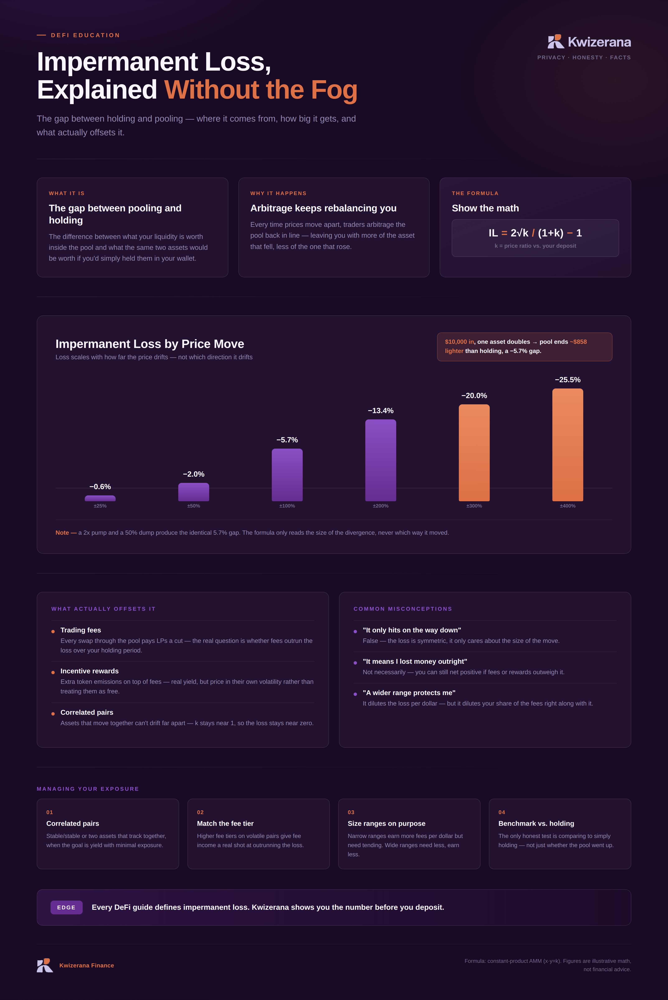

DeFi Education
Impermanent Loss, Explained Without the Fog
The gap between holding and pooling: where it comes from, how big it gets, and what actually offsets it.

Figures are illustrative math, not financial advice.
The gap between holding and pooling: where it comes from, how big it gets, and what actually offsets it.

Figures are illustrative math, not financial advice.